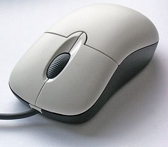

 A computer mouse is a hand-held pointing device that detects two-dimensional motion relative to a surface. This motion is typically translated into the motion of a pointer on a display, which allows a smooth control of the graphical user interface. The first public demonstration of a mouse controlling a computer system was in 1968.